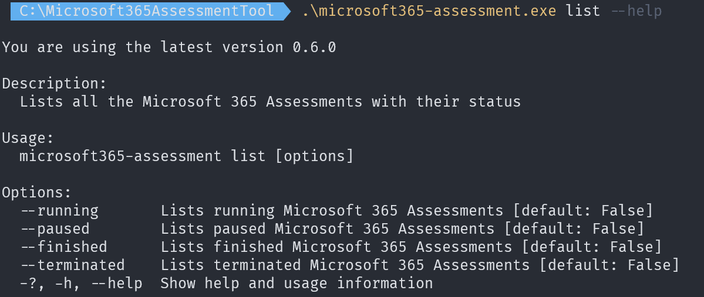
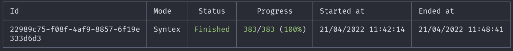
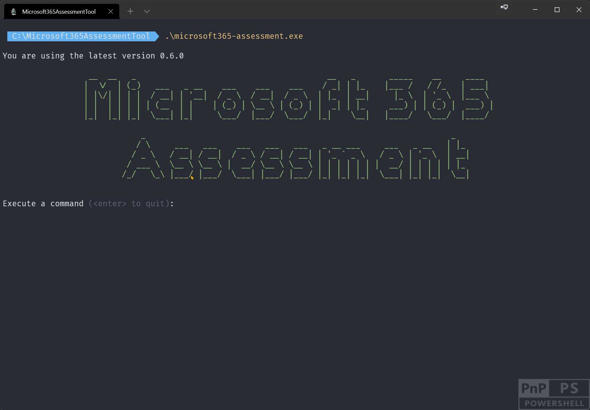
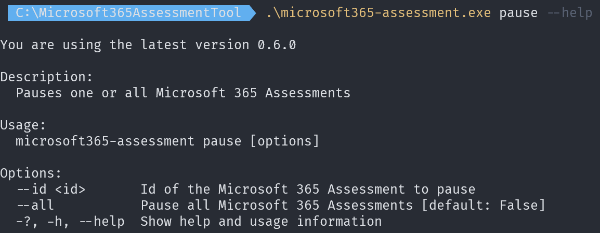
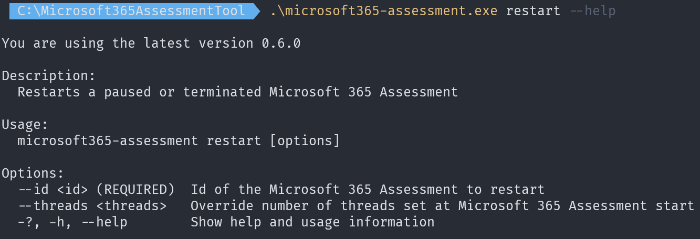

Assessment operational tasks
So you've kicked off an assessment and want to followup on the assessment progress or you want to pause a running assessment because you need to shut down the computer running the assessment. All of these tasks, and more, are possible using the operational actions supported by the Microsoft 365 Assessment tool.
Listing the available assessments
Assessment data is gathered inside folders underneath the folder hosting the Microsoft 365 Assessment tool and you can enumerate the done, running, paused and terminated assessments via the list action.
Sample list commands
Before diving into all the possible command line arguments let's first show some typical use cases:
| Task | CLI |
|---|---|
| List all the assessments | microsoft365-assessment.exe list |
| List the paused assessments | microsoft365-assessment.exe list --paused |
Command line arguments
The easiest way to see all possible command line arguments for a command (e.g. for list) is using the --help parameter.

Listing specific assessments
By default all assessments will be returned ordered by assessment status, followed by a order on assessment age. This means that most recent assessments will be at the bottom of the list. You can however only list assessments in a given status by using either the --running, --paused, --finished or --terminated arguments. These argument can be combined to for example list all paused and terminated assessments.
List output
When using the list action a table is generated listing all the assessment that match the criteria. Following columns are listed in the table:

| Column | Description |
|---|---|
| Id | The assessment id |
| Mode | The assessment mode (e.g. Syntex) defines the adoption or deprecation scenario the assessment is targeting |
| Status | The assessment status: finished is a successfully ended assessment, paused is a paused assessment, running is an assessment that still is in progress and terminated means that the assessment was interrupted (e.g. when the computer running the assessment was shut down) |
| Progress | Shows how many site collections of the total in scope site collections are assessed |
| Started at | When was this assessment for the first time started |
| Ended at | When was this assessment finished |
Getting a live status overview of a running assessment
Once an assessment is started you often want to see it's progress. For that you can use the above described list action, but more convenient for this purpose is the status action as it does a continuos refresh, hence providing a live status overview.
Sample status command
| Task | CLI |
|---|---|
| Realtime status update of the running assessments | microsoft365-assessment.exe status |

Status output
When using the status action a table is generated listing all the running assessments. Following columns are listed in the table:
| Column | Description |
|---|---|
| Id | The assessment id |
| Mode | The assessment mode (e.g. Syntex) defines the adoption or deprecation scenario the assessment is targeting |
| Status | The assessment status: finished is a successfully ended assessment, paused is a paused assessment, running is an assessment that still is in progress and terminated means that the assessment was interrupted (e.g. when the computer running the assessment was shut down) |
| Progress | Shows how many site collections of the total in scope site collections are assessed |
| Retries | Whenever a request is queued for retry a counter will increased. Throttled requests are counted in the first section (1 in the screenshot), requests failed due to network issues are listed in the second section (0 in the screenshot) |
| Session start | When was this assessment run started. If you've restarted an assessment the restart time is shown here |
| Session duration | How long has the current assessment session been running |
Pausing a running assessment
Sometimes you need to pause a running assessment because you need to shutdown the computer running the assessment or the assessment is very heavily throttled. This is possible using the pause action.
Sample pause command
| Task | CLI |
|---|---|
| Pause a running assessment | microsoft365-assessment.exe pause --id 22989c75-f08f-4af9-8857-6f19e333d6d3 |

Command line arguments
The easiest way to see all possible command line arguments for a command (e.g. for pause) is using the --help parameter.

By default you pause one assessment by specifying the assessment to pause using the --id argument, but you can also opt to pause all running assessments using the -all:$true argument.
Restarting a paused or terminated assessment
Sample restart command
| Task | CLI |
|---|---|
| Restart a paused or terminated assessment | microsoft365-assessment.exe restart --id 22989c75-f08f-4af9-8857-6f19e333d6d3 |

Command line arguments
The easiest way to see all possible command line arguments for a command (e.g. for restart) is using the --help parameter.

Restarting happens per assessment and you specify the assessment to restart via the --id argument. When restarting an assessment you do have the option to change the number of parallel operations via the --threads argument. If you omit this argument the assessment will restart using the number of parallel operations set at assessment start.
Clearing authentication caches
When using delegated permissions in combination with either --authmode equal to Interactive or Device then you're seeing a one time prompt for credentials when you use this option for the first time. As part of this operation the authentication library (MSAL) state is cached on disk using machine/user specific encryption. With this cache the Microsoft 365 Assessment tool can automatically request new access tokens whenever that's needed. If you're however switching between tenants or you want to remove this stored cache you can do so via the cache action.
Sample pause command
| Task | CLI |
|---|---|
| Clear authentication cache | microsoft365-assessment.exe cache --clearauthentication |
Note
An alternative way of clearing this cache is by deleting the msalcache.bin file inside the folder hosting microsoft365-assessment.exe.